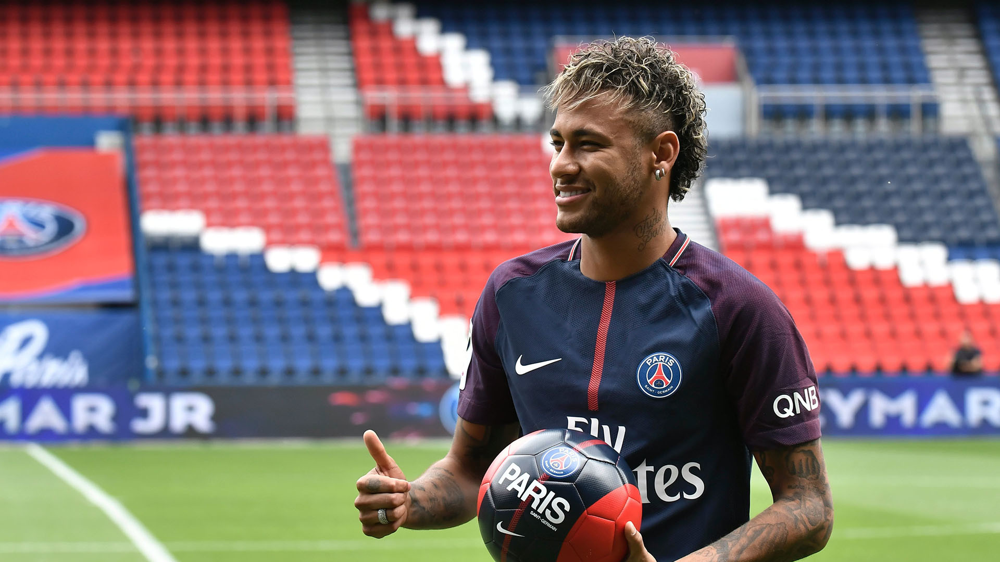

Neymar is known as one of Brazils best players. He has scored at least 100 goals for three different clubs. He began his career at the age of 17, and is still going strong.
Debuting for Brazil aged 18, Neymar is currently joint-top goalscorer for his national team alongside Pelé, with 77 goals in 124 matches. He won the 2013 FIFA Confederations Cup, winning the Golden Ball. His participation in the 2014 FIFA World Cup and 2015 Copa América was cut short by injury and a suspension, respectively, before captaining Brazil to their first Olympic gold medal in men's football at the 2016 Summer Olympics, having already achieving a silver medal at the 2012 edition. Having renounced the captaincy, he featured at the 2018 World Cup, and after missing the 2019 Copa América through injury, helped Brazil to a runner-up finish at the 2021 tournament.
| Accomplishments | Team |
|---|---|
| 5x French Champion | Paris Saint-Germain |
| 3x Spanish Cup Winner | FC Barcelona |
| 1x Brazilian Cup Winner | Santos FC |